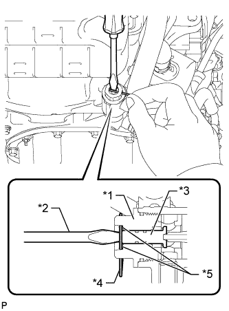
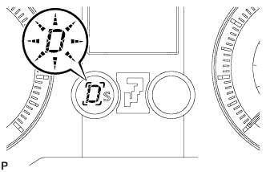
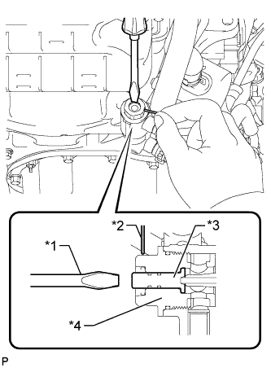

AUTOMATIC TRANSMISSION FLUID > ADJUSTMENT |
| 1. PRELIMINARY PROCEDURES |
w/ Rear Air Suspension System:
When jacking up or lifting the vehicle, stop operation of the air suspension control system by pressing the height control mode select switch.
|  |
Using compressed air, etc., blow dust off the thermostat cap to clean it.
Using a screwdriver, push in the shaft of the thermostat.
With the shaft of the thermostat pressed in, push a pin into a hole in the side of the thermostat cap. Insert the pin until it passes through the hole in the other side of the thermostat cap to fix the shaft in place.
| *1 | Cap |
| *2 | Screwdriver |
| *3 | Shaft |
| *4 | Pin |
| *5 | Step |
| 2. BEFORE FILLING TRANSMISSION |
| 3. TRANSMISSION FILL |
 |
Remove the refill plug and overflow plug.
| *1 | Refill Plug |
| *2 | Overflow Plug |
| *3 | Refill Hole |
 |
Fill the transmission through the refill hole until fluid begins to trickle out of the overflow tube.
| *1 | Overflow Tube |
| *a | Specified Fluid Level |
Reinstall the overflow plug.
Fill the transmission with the amount of fluid listed in the table below.
| Procedure Performed | Fill Amount |
| Transmission pan and drain plug removal | 1.7 liters (1.8 US qts, 1.5 Imp. qts) |
| Transmission valve body removal | 4.3 liters (4.5 US qts, 3.8 Imp. qts) |
| Torque converter removal | 5.4 liters (5.7 US qts, 4.8 Imp. qts) |
Install the refill plug.
Start the engine and idle it.
Move the shift lever through the entire gear range to circulate the fluid.
Wait for 30 seconds with the engine idling.
Stop the engine.
Remove the refill plug.
Fill the transmission with the remaining fluid until the amount in the table has been filled.
Install the refill plug.
| 4. FLUID TEMPERATURE CHECK |
Turn the engine switch off.
Connect the intelligent tester to the DLC3.
Turn the engine switch on (IG).
Enter the following menus: Powertrain / ECT / Data List / A/T Oil Temperature 1.
Check the ATF temperature.
| 5. FLUID LEVEL CHECK |
When using the intelligent tester:
Enter the following menus: Powertrain / ECT / Active Test / Connect the TC and TE1.
 |
When not using the intelligent tester:
Using SST, connect terminals 13 (TC) and 4 (CG) of the DLC3.
| *a | Front view of DLC3: |
Start the engine and idle it.
Slowly move the shift lever from P to S, and then change the gear from 1st to 5th. Then return the shift lever to P.
|  |
Move the shift lever to D, and quickly move it back and forth between N and D (once within 1.5 seconds) for at least 6 seconds. This will activate the fluid temperature detection mode.
When using the intelligent tester:
Return the shift lever to P and terminate the Active Test on the intelligent tester.
When not using the intelligent tester:
Disconnect SST from the DLC3.
Allow the engine to idle until the fluid temperature reaches 46 to 52°C (115 to 126°F).
| Below 46°C (115°F) | 46 to 52°C (115 to 126°F) | Higher than 52°C (126°F) |
| Turns off | Turns on | Blinking |
|
Remove the overflow plug and gasket with the engine idling.
| *1 | Overflow Tube |
| *a | Specified Fluid Level |
Wait until the overflow slows to a trickle.
Remove the refill plug and gasket.
Refill the transmission through the refill hole until fluid begins to trickle out of the overflow tube.
Wait until the overflow slows to a trickle.
Install a new gasket and the refill plug.
Install a new gasket and the overflow plug.
| 6. COMPLETE |
Turn the engine switch off.
When using the intelligent tester:
Disconnect the intelligent tester from the DLC3.
|  |
Push in the shaft with a screwdriver and remove the pin.
| *1 | Screwdriver |
| *2 | Pin |
| *3 | Shaft |
| *4 | Cap |
Inspect for automatic transmission fluid leaks.